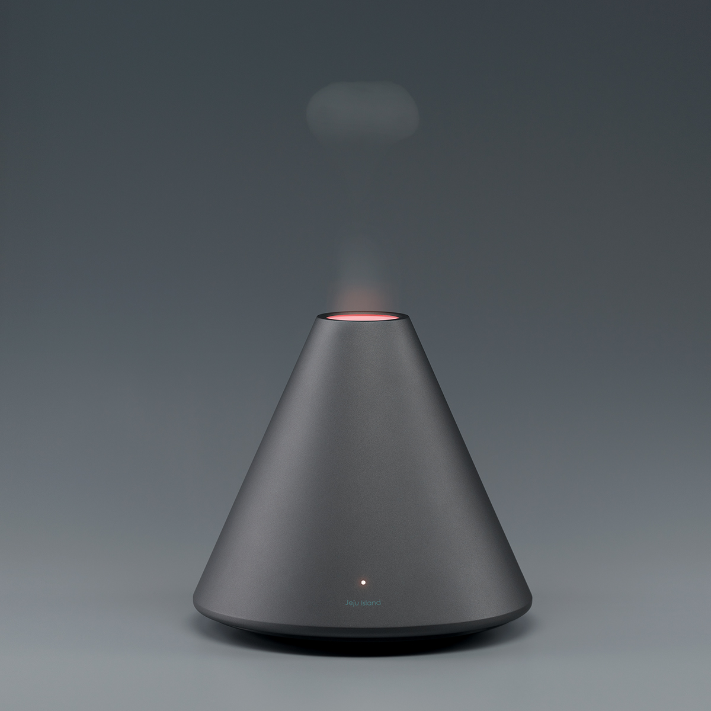

Hospital Vall d'Hebron Barcelona
2016-11-09
企业版不仅支持PC桌面端，更完美支持手机触屏版。产品为什么没有采用响应式设计，下面简单总结几个主要原因：
产品摒弃响应式设计的原因
响应式设计只是网站跨平台的一种网站解决方案，是兼容各种终端的一种折衷方案。下面介绍一下，为什么在很多情况下响应式设计是不值得的。
1.通常响应式设计作为单独适配每种设备的时候使用的一种补偿方案，但是无法将各个平台的特性都发挥到极致。
2.响应式设计是通过一套代码适配到各种终端，这就意味着每种终端无论硬件配置如何，需要读取的是同一套程序，在此过程中，就会出现很多冗余的代码～体现在前台页面上，就是加载效率低。
手机触屏版网站的优势



数据统一
PC端和手机触屏版的数据完全匹配，后台数据只需更新一次，即可保证PC+手机触屏版同步更新 ，为保证手机触屏版的体验性能，产品在网站LOGO及幻灯图片需单独上传以适应手机的尺寸
优化体验
自由度高，流畅度高、在表现形式上可以和PC端做差异性，完全为手机触屏版定制。
速度提升
手机触屏版网站的打开速度会远远高于响应式和常规网站，手机网站的代码更精简（纯为手机定制）。
扫描二维码分享到微信